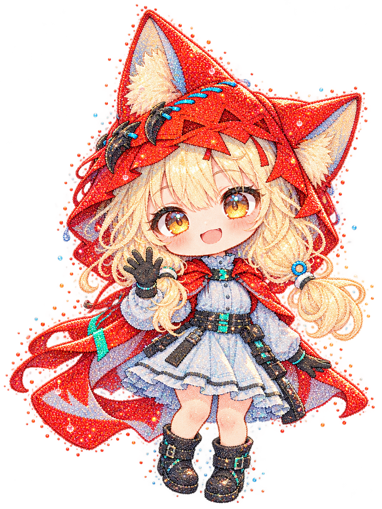

LITTLE LINKS / 我的导航
雨间小屋
一些常用的好去处。
RAINY LITTLE HOME
听，雨落下的声音
在这里，放慢一点也没关系。RAINY LITTLE HOME / 星雨一刻回到小屋 ↗
雨滴的另一种模样
洛茜ROSSI
让雨滴，变成星星。
把小小的快乐，留在这一刻。
靠近她，看看星星的回应。

移动指尖，拨动星雨 · 轻点人物，散落一片星光
LITTLE LINKS / 我的导航
一些常用的好去处。
RAINY LITTLE HOME
雨滴的另一种模样
让雨滴，变成星星。
把小小的快乐，留在这一刻。
靠近她，看看星星的回应。

移动指尖，拨动星雨 · 轻点人物，散落一片星光